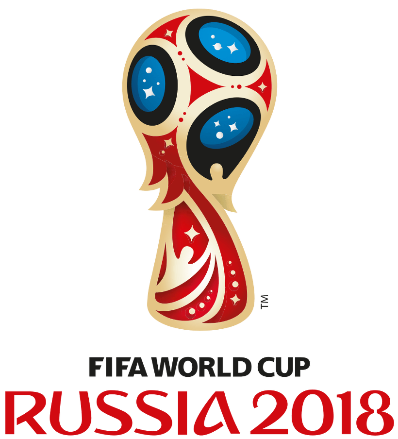

| 2018 러시아 월드컵 기간 | 개최지 |
|---|---|
| 2018.6.14(목)~7.16(월) | 러시아 |
| 대회일정 | 조별리그 6.15(금)~6.29(금) |
토너먼트 6.30(토)~7.16(월) |
|---|---|---|
| 개막식 | 6.14(목) 23:30 | |
| 폐막식 | 7.15(일) 23:30 | |
| 중계 채널 | KBS 2TV MBC SBS 아프리카TV | |
조별 리그 - A조
| 6월 15일(금) 00:00 경기 종료 |
 5 5러시아 vs  0 0사우디아라비아 |
|
|---|---|---|
| 6월 15일(금) 21:00 경기 종료 |
 0 0이집트 vs  1 1우루과이 |
중계 채널 MBC 아프리카TV |
| 6월 20일(수) 03:00 |
러시아 vs 이집트 |
중계 채널 MBC SBS 아프리카TV |
| 6월 21일(목) 00:00 |
우루과이 vs 사우디아라비아 |
중계 채널 MBC SBS 아프리카TV |
| 6월 25일(월) 23:00 |
우루과이 vs 러시아 |
중계 채널 MBC SBS 아프리카TV |
| 6월 25일(월) 23:00 |
사우디아라비아 vs 이집트 |
중계 채널 FOX TV |
조별 리그 - B조
| 6월 16일(토) 00:00 경기 종료 |
 0 0모로코 vs  1 1이란 |
중계 채널 KBS 2TV 아프리카TV |
|---|---|---|
| 6월 16일(토) 03:00 경기 종료 |
 3 3포르투칼 vs  3 3스페인 |
중계 채널 MBC SBS 아프리카TV |
| 6월 20일(수) 21:00 |
포르투칼 vs 모르코 |
중계 채널 MBC 아프리카TV |
| 6월 21일(목) 03:00 |
이란 vs 스페인 |
중계 채널 SBS 아프리카TV |
| 6월 26일(화) 03:00 |
이란 vs 포르투칼 |
중계 채널 SBS 아프리카TV |
| 6월 26일(화) 03:00 |
스페인 vs 모르코 |
중계 채널 MBC 아프리카TV |
조별 리그 - C조
| 6월 16일(토) 19:00 |
 프랑스 vs  호주 |
중계 채널 SBS 아프리카TV |
|---|---|---|
| 6월 17일(일) 01:00 |
 페루 vs  덴마크 |
중계 채널 MBC SBS 아프리카TV |
| 6월 21일(목) 21:00 |
덴마크 vs 호주 |
중계 채널 MBC SBS 아프리카TV |
| 6월 22일(금) 00:00 |
프랑스 vs 페루 |
중계 채널 MBC SBS 아프리카TV |
| 6월 26일(화) 23:00 |
덴마크 vs 프랑스 |
중계 채널 MBC 아프리카TV |
| 6월 26일(화) 23:00 |
호주 vs 페루 |
중계 채널 SBS 아프리카TV |
조별 리그 - D조
| 6월 16일(토) 22:00 |
 아르헨티나 vs  아이슬란드 |
중계 채널 MBC SBS 아프리카TV |
|---|---|---|
| 6월 17일(일) 04:00 |
 크로아티아 vs  나이지리아 |
중계 채널 MBC 아프리카TV |
| 6월 22일(금) 03:00 |
아르헨티나 vs 크로아티아 |
중계 채널 MBC 아프리카TV |
| 6월 23일(토) 00:00 |
나이지리아 vs 아이슬란드 |
중계 채널 MBC SBS 아프리카TV |
| 6월 27일(수) 03:00 |
나이지리아 vs 아르헨티나 |
중계 채널 SBS 아프리카TV |
| 6월 27일(수) 03:00 |
아이슬란드 vs 크로아티아 |
중계 채널 MBC 아프리카TV |
조별 리그 - E조
| 6월 17일(일) 21:00 |
 코스타리카 vs  세르비아 |
중계 채널 SBS 아프리카TV |
|---|---|---|
| 6월 18일(월) 03:00 |
 브라질 vs  스위스 |
중계 채널 MBC SBS 아프리카TV |
| 6월 22일(금) 21:00 |
브라질 vs 코스타리카 |
중계 채널 SBS 아프리카TV |
| 6월 23일(토) 03:00 |
세르비아 vs 스위스 |
중계 채널 MBC SBS 아프리카TV |
| 6월 28일(목) 03:00 |
세르비아 vs 브라질 |
중계 채널 MBC 아프리카TV |
| 6월 28일(목) 03:00 |
스위스 vs 코스타리카 |
중계 채널 SBS 아프리카TV |
조별 리그 - F조
| 6월 18일(월) 00:00 |
 독일 vs  멕시코 |
중계 채널 KBS 2TV MBC SBS 아프리카TV |
|---|---|---|
| 6월 18일(월) 21:00 |
 스웨덴 vs  대한민국 |
중계 채널 KBS 2TV MBC SBS 아프리카TV |
| 6월 24일(일) 00:00 |
대한민국 vs 멕시코 |
중계 채널 KBS 2TV MBC SBS 아프리카TV |
| 6월 24일(일) 03:00 |
독일 vs 스웨덴 |
중계 채널 MBC SBS 아프리카TV |
| 6월 27일(수) 23:00 |
멕시코 vs 스웨덴 |
중계 채널 KBS 1TV 아프리카TV |
| 6월 27일(수) 23:00 |
대한민국 vs 독일 |
중계 채널 KBS 2TV MBC SBS 아프리카TV |
조별 리그 - G조
| 6월 19일(화) 00:00 |
 벨기에 vs  파나마 |
중계 채널 MBC SBS 아프리카TV |
|---|---|---|
| 6월 19일(화) 03:00 |
 튀니지 vs  잉글랜드 |
중계 채널 SBS 아프리카TV |
| 6월 23일(토) 21:00 |
벨기에 vs 튀니지 |
중계 채널 MBC 아프리카TV |
| 6월 24일(일) 21:00 |
잉글랜드 vs 파나마 |
중계 채널 MBC SBS 아프리카TV |
| 6월 29일(금) 03:00 |
잉글랜드 vs 벨기에 |
중계 채널 MBC SBS 아프리카TV |
| 6월 29일(금) 03:00 |
파나마 vs 튀니지 |
중계 채널 없음 |